样品中 DNA 序列越均一，变性发生的温度范围越窄，转变越「陡」；样品越杂，曲线越平缓。这是由「熔点时突然熔化」这一类比推出来的。
CHAPTER 08 · NUCLEIC ACID PROPERTIES & METHODS
核酸的性质及研究方法
第 7 章讲了核酸长什么样，这一章讲它有什么性质、以及怎样利用这些性质去研究它。核心逻辑只有一条：把理化性质当成实验手段——变性复性变成杂交，水解选择性变成测序与酶切，紫外吸收变成定量，电荷与形状变成电泳与离心。
紫外吸收变性与 Tm增色/减色效应复性与 Cot 曲线酸/碱/酶水解分离纯化Sanger 测序高通量测序
1. 核酸的理化性质总览
课件把核酸的理化性质归为五类，这五类各自对应后面的一种研究方法：
| 性质 | 内容 | 对应的研究方法 |
|---|---|---|
| 紫外吸收 | 碱基的共轭双键在 260 nm 有特征吸收 | 定量与纯度检测（A₂₆₀/A₂₈₀） |
| 酸碱解离 | 磷酸基与碱基可解离，带负电 | 电泳、离子交换层析 |
| 沉淀 | 可被无水乙醇沉淀 | 核酸的抽取与浓缩 |
| 变性、复性和杂交 | 双螺旋可解开并重新配对 | 杂交、Tm 测定、Cot 分析、PCR |
| 水解 | 糖苷键与磷酸二酯键可被酸、碱或酶切断 | 序列测定、限制性酶切、核酸酶工具 |
这一章的学法
不要把这五条当成五组孤立的知识点去背。每一条性质后面都挂着一类技术，而技术的细节（为什么用 260 nm、为什么要缓慢冷却、为什么用 ddNTP）全部都由性质决定。把「性质 → 技术」的对应关系建立起来，记忆量会大幅减少。
2. DNA 的变性
2.1 定义
变性是指核酸受到加热、极端的 pH 或离子强度降低等因素，或特殊化学试剂的作用，其双螺旋区的氢键断裂，变成单链的过程。
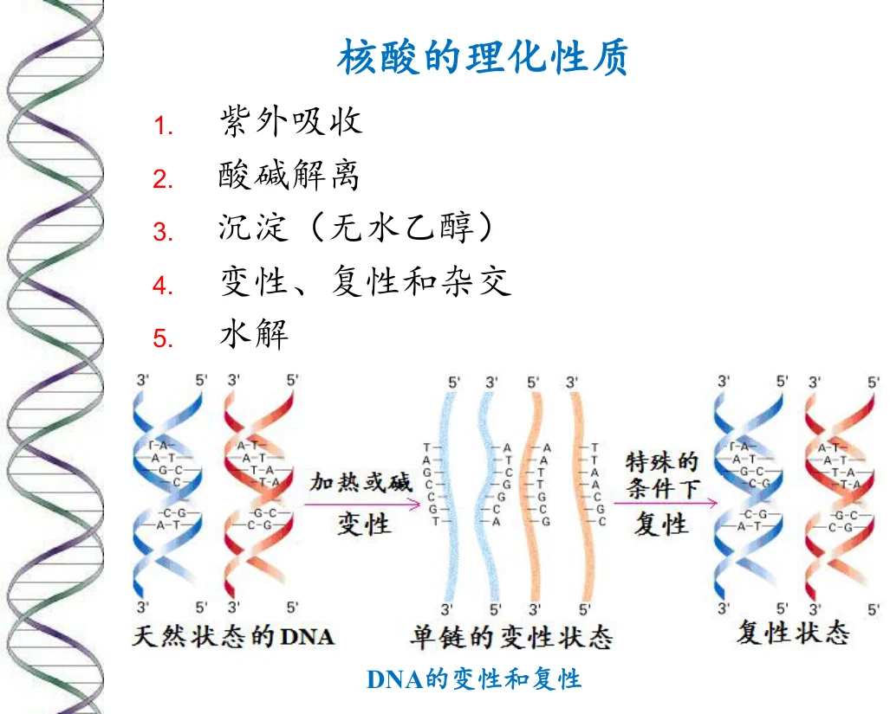
图源：第8章 PPT 第 4 页。DNA 的变性——双螺旋区的氢键断裂、解成单链，而磷酸二酯键骨架完好。
最重要的一句话：变性不涉及共价键断裂
课件明确定义里就有这一句。变性的本质是维持双螺旋的氢键与碱基堆积力被破坏，而磷酸二酯键骨架完好。这直接决定了变性是可逆的（见第 4 节复性）——因为一级结构没被破坏，只要条件恢复，互补单链就能重新配对。如果共价键断裂了，那就叫降解或水解，不是变性（见第 5 节）。这个区分是整章的枢纽。
2.2 变性的表征
| 指标 | 变性时变化 | 原因 |
|---|---|---|
| 紫外吸收 | 升高（增色效应） | 双螺旋解开后碱基暴露，堆积作用减弱，260 nm 吸光增强 |
| 浮力密度 | 升高 | 单链比双链更松散，与溶剂结合更多，密度增大 |
| 黏度 | 降低 | 刚性的双螺旋变成柔软的单链线团，流体力学体积减小 |
| 生物活性 | 不变、降低或丧失 | 取决于变性程度与是否可复性 |
其中紫外吸收增加的现象称为增色效应。它的可逆对应现象是复性时的减色效应。
为什么这三条都指向同一件事
「紫外吸收升高、密度升高、黏度降低」看似三个独立现象，其实全部来自双螺旋 → 单链线团这一个结构变化：碱基从堆积状态变为暴露状态（吸光升高）、结构从紧密变为松散（密度升高）、分子从刚性棒变为柔性线团（黏度降低）。抓住这一个变化，三条表征就能一起推出来。
2.3 Tm：DNA 的「熔点」
双链 DNA 的热变性是在很窄的温度范围内发生的，与晶体在熔点时突然熔化的情形相似，因此 DNA 也具有「熔点」，用 Tm 表示。
Tm 实际是 DNA 的双螺旋有一半发生热变性时相应的温度。也就是说，Tm 处双链与单链各占约一半，对应变性曲线（吸光度对温度作图）的拐点。
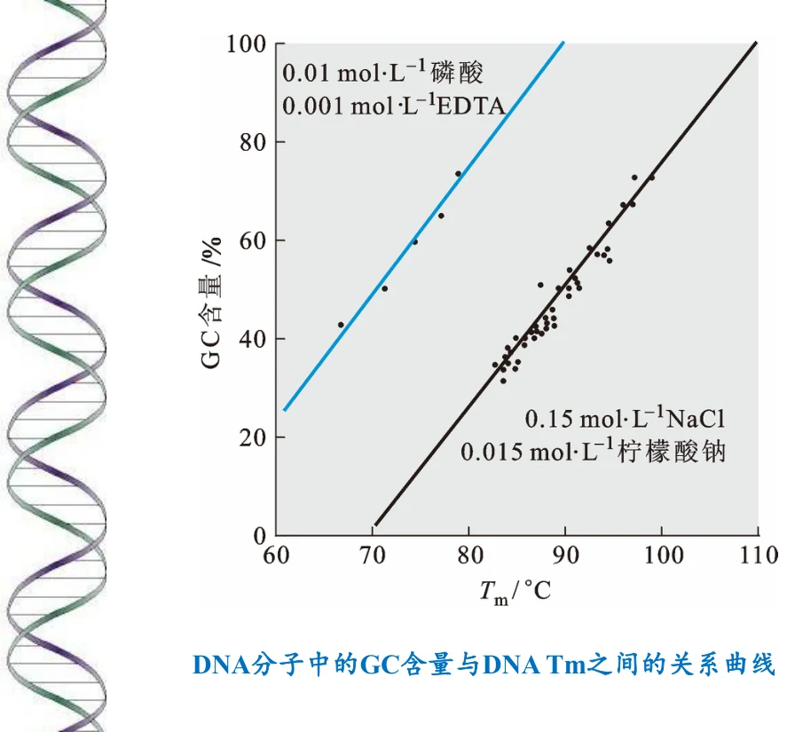
图源：第8章《核酸的性质及研究方法》PPT，第 6 页。DNA 分子中的 GC 含量与 Tm 之间的关系曲线。两条直线的差别揭示了离子强度的影响：上方蓝线为低盐条件（0.01 mol·L⁻¹ 磷酸 + 0.001 mol·L⁻¹ EDTA），下方黑线为高盐条件（0.15 mol·L⁻¹ NaCl + 0.015 mol·L⁻¹ 柠檬酸钠）。同样 GC 含量下，低离子强度使 Tm 显著降低——因为阳离子可以中和磷酸骨架的负电荷，屏蔽链间排斥；离子强度越低，两条链的排斥越强，双链越不稳定。
课件指出，DNA 的 Tm 值受四类因素影响：
GC 含量越高，Tm 越高。原因是 G≡C 有三个氢键，A=T 只有两个；而且 GC 的碱基堆积作用也更强。所以 Tm 可以作为 GC 含量的间接指标——这正是图中横轴与纵轴关系的来源。
离子强度越低，Tm 越低（见图）。阳离子屏蔽磷酸骨架的负电荷，减少两条链之间的静电排斥；缺少阳离子时排斥增强，双链更容易解开。
如甲酰胺、尿素等变性剂会降低 Tm，因为它们能与碱基形成氢键、竞争性地破坏碱基配对。这也是杂交实验中可以用甲酰胺降低杂交温度的原因。
把 Tm 的四个影响因素归纳成一句
凡是增强双链间相互作用的因素，都提高 Tm；凡是削弱它的，都降低 Tm。GC 含量高 → 氢键多 → Tm 高；离子强度高 → 静电排斥被屏蔽 → Tm 高；变性剂存在 → 竞争性破坏配对 → Tm 低；样品均一性好 → 转变集中 → 曲线陡（但不改变 Tm 本身）。用这一句可以复原全部四条。
3. DNA 的复性与 Cot 曲线
3.1 复性与退火
核酸变性在一定条件下也是可逆的。当各种变性因素不复存在时，变性时解开的互补单链全部或部分恢复到天然双螺旋结构的现象称为复性。
热变性 DNA 一般经缓慢冷却后即可复性，此过程称为退火。
为什么必须「缓慢」冷却
这一点是理解复性的关键。如果迅速冷却（淬火），单链来不及找到互补序列就已各自「冻结」成随机构象，无法重新配对；缓慢降温给互补链留出搜索与配对的时间。这也解释了 PCR 中退火步骤的温度设定——它是一个受控的、有目的地让引物与模板配对的复性过程。
伴随 DNA 复性的表征变化恰好与变性相反：浮力密度和紫外吸收减少、黏度增加，生物活性恢复。其中紫外吸收减少的现象称为减色效应。
影响 DNA 复性的因素有四个方面：温度、离子强度、DNA 浓度和 DNA 序列的复杂度。
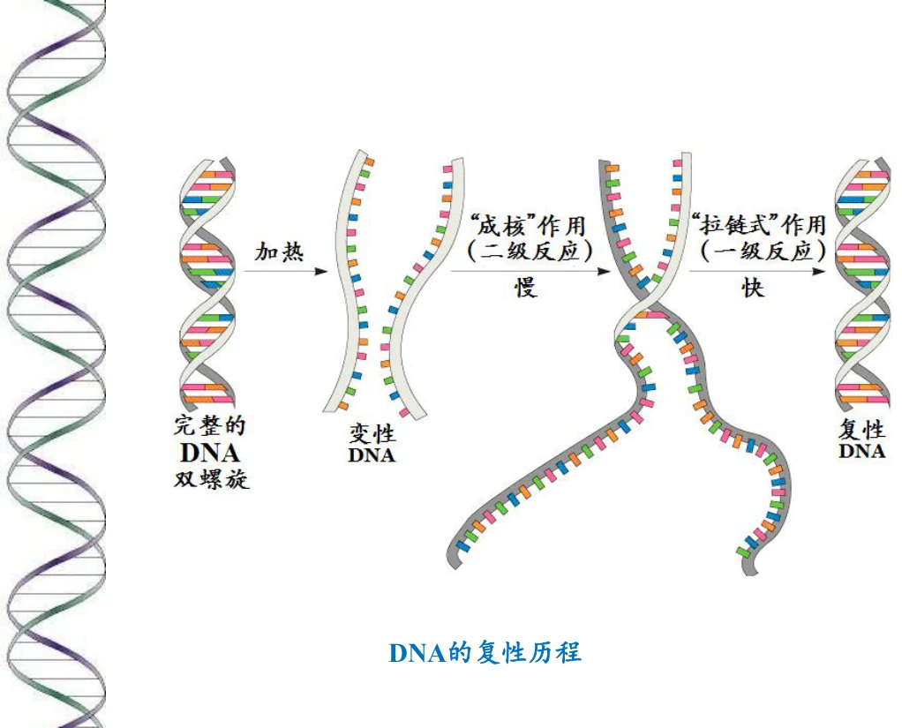
图源：第8章 PPT 第 8 页。DNA 的复性历程——曲线反映单链随时间重新配对的进程。
3.2 复性动力学：Cot 曲线
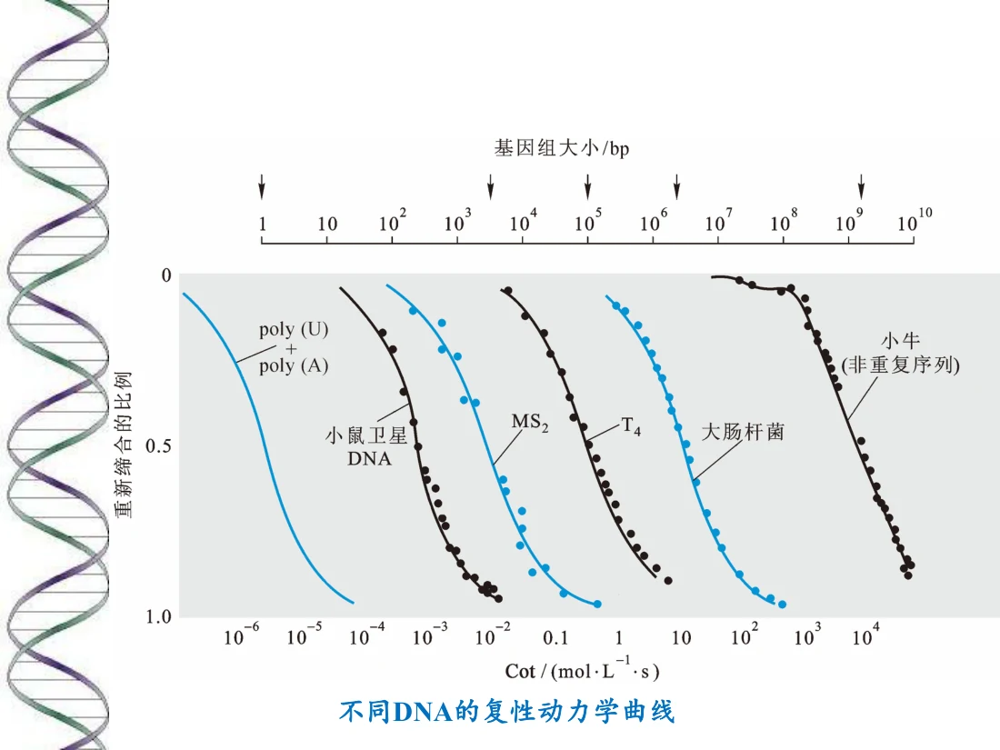
图源：第8章 PPT 第 9 页。不同 DNA 的复性动力学曲线——不同来源的 DNA 复性速率差别很大，这一差别正是「序列复杂度」的直接体现。
Cot 曲线为什么能测复杂度
复性的速率取决于互补序列彼此相遇的概率。基因组的序列复杂度越高（重复序列越少），要找到互补链就越难，复性就越慢。因此把复性程度对 Cot（浓度 × 时间的乘积）作图，曲线的位置直接反映序列复杂度。
这也是为什么真核基因组会出现多相曲线：高度重复序列（如卫星 DNA）复性极快，在中度重复序列之后，单拷贝序列需要很长的 Cot 才能复性。这个实验在测序技术出现之前，是了解基因组组成的主要手段——它不需要知道序列，只需要测「复性有多快」。
4. 核酸的水解
核酸分子中有两类关键共价键：糖苷键（碱基与糖之间）和磷酸二酯键（连接核苷酸的骨架）。不同水解方式对这两类键的选择性完全不同，而这些选择性正是各类研究工具的基础。
4.1 酸水解
核酸分子内的糖苷键和磷酸二酯键对酸的敏感性不同：
糖苷键 > 磷酸酯键 （即糖苷键更容易被酸水解）
而在糖苷键内部又有进一步的选择性：
嘌呤糖苷键 > 嘧啶糖苷键
这两条选择性的实际后果
酸水解会优先脱去嘌呤碱基，生成无嘌呤酸（apurinic acid，AP 位点）。这正是 DNA 损伤中「脱嘌呤」的化学基础，也是 Maxam-Gilbert 化学断裂法测序的原理来源之一（见第 7 节）——用酸处理可以让嘌呤碱基脱落，再在碱性条件下用哌啶切断骨架。
4.2 碱水解
| 核酸 | 对碱的敏感性 | 产物 |
|---|---|---|
| RNA | 磷酸二酯键对碱异常敏感 | 得到 2′- 或 3′-核苷酸的混合物 |
| DNA | 对碱的作用并不敏感 | 抗碱水解 |
课件特别说明了这种差异的生理意义：
作为遗传物质的 DNA 应该更稳定，不易水解——遗传信息需要长期保存，化学稳定性是必要条件。
RNA（主要是 mRNA）是 DNA 的信使，完成任务后应该迅速降解——信息的价值在于及时，不需要长期保存。
结构差异导致了稳定性差异
RNA 易被碱水解的根本原因是其核糖 2′ 位有游离羟基，可以在碱性条件下作为亲核试剂进攻自身的磷酸二酯键，形成 2′,3′-环磷酸中间体，进而水解。DNA 的脱氧核糖没有 2′-OH，因此无法进行这个分子内进攻，所以抗碱。这与第 7 章讨论的「RNA 为什么不适合做遗传物质」是同一个化学事实的两个侧面——2′-OH 既是 RNA 能折叠催化的原因，也是它不稳定的原因。
4.3 酶促水解与核酸酶的分类
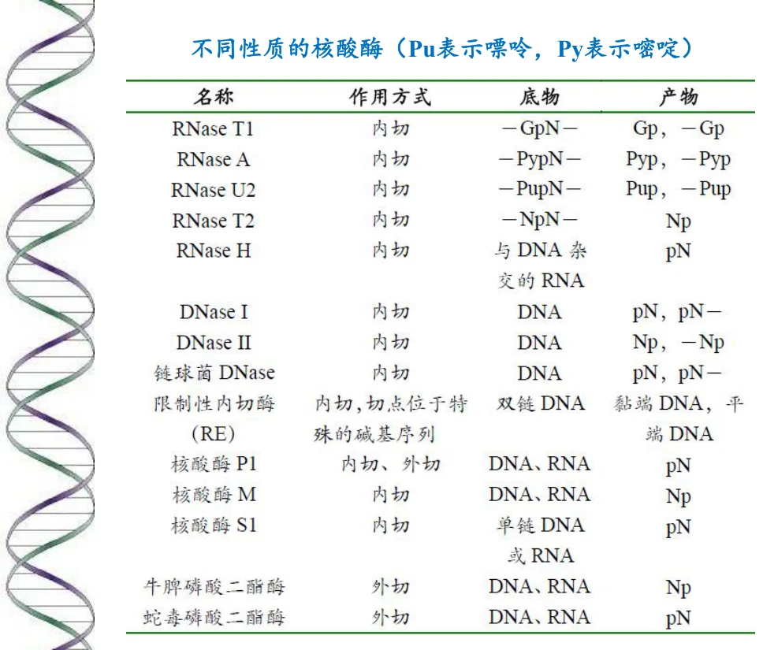
图源：第8章 PPT 第 11 页。不同性质的核酸酶（Pu 表示嘌呤，Py 表示嘧啶）。这张表把核酸酶按多个维度分类，是理解核酸酶工具的基础。
| 分类维度 | 类型 | 说明 |
|---|---|---|
| 按底物 | DNase | 只水解 DNA |
| RNase | 只水解 RNA | |
| 按作用位置 | 核酸外切酶 exonuclease | 从链的末端逐个水解，产生单核苷酸 |
| 核酸内切酶 endonuclease | 从链的内部切断，产生寡核苷酸片段 | |
| 5′→3′ 外切酶 | 从 5′ 端向 3′ 端方向水解 | |
| 3′→5′ 外切酶 | 从 3′ 端向 5′ 端方向水解 | |
| 限制性内切酶 | 识别特定序列并在特定位点切断，是分子克隆的核心工具 | |
| 按切割产物 | 产生 5′-磷酸 | 切口留下 5′-磷酸末端 |
| 产生 3′-磷酸 | 切口留下 3′-磷酸末端 | |
| 产生黏性末端 / 平末端 | 决定能否用于连接与克隆 |
为什么核酸酶的分类要背这么多维度
因为「用哪个酶」取决于实验目的。要做序列分析，需要内切酶把长链切成可读的片段；要删除末端磷酸防止自连，需要外切酶或磷酸酶；要把基因切下来再拼到载体上，需要限制性内切酶产生特定末端。每一个维度对应一个实验需求——这也是这一章把核酸酶放在「研究方法」而不是「结构」里的原因。
5. 核酸的分离、纯化与定量
课件把这一整套流程分为六步：
核酸的抽取 → 两种核蛋白的分离 → 蛋白质的去除 → 核酸的沉淀 → 电泳 / 离心 / 层析 → 纯度的检测和定量
| 步骤 | 做什么 | 依据的性质 |
|---|---|---|
| 核酸的抽取 | 破碎细胞、释放核酸 | 细胞结构 |
| 两种核蛋白的分离 | 把 DNA 与 RNA 分开 | 两者在密度、电荷、稳定性上的差异 |
| 蛋白质的去除 | 用酚、氯仿等变性并抽提蛋白 | 蛋白质与核酸在溶剂中的分配差异 |
| 核酸的沉淀 | 用无水乙醇沉淀核酸 | 核酸不溶于乙醇（课件第 1 页即列此项） |
| 电泳 / 离心 / 层析 | 按大小、密度或电荷进一步分离 | 电荷、大小、形状、密度 |
| 纯度检测与定量 | 测紫外吸收 | 碱基在 260 nm 的特征吸收 |
纯度为什么用 A₂₆₀/A₂₈₀
核酸在 260 nm 有最大吸收（来自碱基的共轭双键），而蛋白质在 280 nm 有最大吸收（主要来自芳香族氨基酸）。因此两者的比值就是核酸纯度指标：纯的 DNA 样品 A₂₆₀/A₂₈₀ 约 1.8，纯 RNA 约 2.0。比值偏低说明蛋白质污染，偏高说明可能有 RNA 残留或降解。
这个指标把两章的内容连起来了：260 nm 来自第 6 章的碱基结构，280 nm 来自第 2 章的芳香族氨基酸侧链。理解了各自的来源，就不必死记数值。
6. DNA 一级结构的测定
课件列出三类方法：Sanger 发明的末端终止法（双脱氧法）、Maxam 和 Gilbert 发明的化学断裂法、以及焦磷酸测序与深度测序。
6.1 末端终止法（双脱氧法）
原理：ddNTP 掺入可导致 DNA 复制的末端终止。
关键在于 ddNTP（双脱氧核苷酸）缺少 3′-OH。DNA 聚合酶延伸链时必须用上一个核苷酸的 3′-OH 去进攻下一个核苷酸的 5′-磷酸；ddNTP 一旦掺入，链的 3′ 端就不再带有羟基，下一个核苷酸无法再连接，延伸就此终止。
课件给出的步骤：
- 进行四组平行反应。
- 每一组反应混合物含有四种 dNTP。
- 每一组反应还含有一种少量的 ddNTP（四组分别是 ddA、ddT、ddG、ddC）。
- 在多数情况下，聚合酶使用正常核苷酸，DNA 合成正常延伸。
- 有时，聚合酶使用 ddNTP，而导致末端终止。
- 每一组反应中 ddNTP 的随机插入留下一系列长度不等的、以该双脱氧核苷酸结尾的 DNA 链。
- 对每一组反应混合物走凝胶电泳。
- 片段越短，走得越快，就越靠近凝胶的底部。
- 从凝胶的底部向上读出序列。
- 将读出的序列转化成互补链的序列。
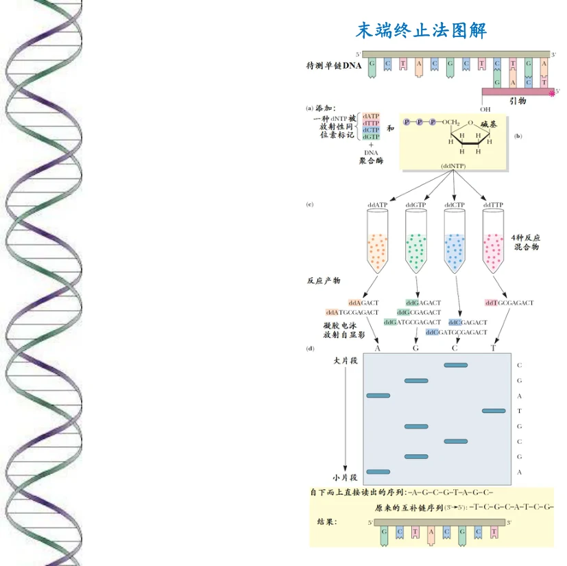
图源：第8章 PPT 第 15 页。末端终止法图解——四个泳道对应四种 ddNTP，从下往上读即得序列。
»为什么「少量」是关键，以及为什么必须读互补链
①「少量 ddNTP」的作用：如果 ddNTP 浓度高，链会在第一个位置就终止，只能得到一条带；只有让 ddNTP 以低概率随机掺入，才能在每个可能的位置都产生一部分终止的链，形成长度连续的一套片段。这是「末端终止法」能读出完整序列的数学前提。
② 为什么最终要转化：测序反应合成的是新链，而新链与模板链互补。所以电泳读出的是新链的序列，真正的待测序列是它的互补序列。这一步是初学者最容易漏掉的。
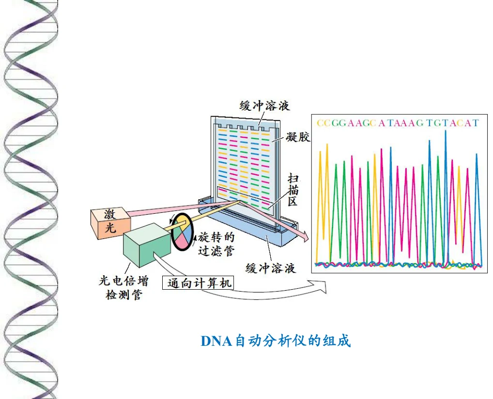
图源：第8章 PPT 第 16 页。DNA 自动分析仪的组成——把四组反应合并到一台仪器中，用荧光标记代替放射性同位素，实现自动化读取。这是 Sanger 法能够承担人类基因组计划的技术前提。
6.2 化学断裂法（Maxam-Gilbert 法）
原理：用特殊的化学试剂处理待测的、具有末端放射性同位素（³²P）标记的单链 DNA（或只有一条链的末端被标记的双链 DNA 片段），造成特定碱基的修饰、脱落和戊糖-磷酸骨架被特异性切割，从而产生一组长度不同的 DNA 链降解产物，经聚丙烯酰胺凝胶电泳分离和放射自显影之后，可直接读出待测 DNA 片段的核苷酸序列。
步骤：进行四组平行的反应。
| 反应 | 处理方式 |
|---|---|
| G 特异性剪切 | 在碱性条件下，先用硫酸二甲酯（DMS）处理，然后再使用哌啶处理 |
| 嘌呤碱基特异性剪切（A+G） | DNA 先进行酸处理，然后再加 DMS |
| 嘧啶碱基特异性剪切（C+T） | 先用肼处理，然后用哌啶处理 |
| C 特异性剪切 | 在高盐下，先用肼处理，然后用哌啶处理 |
最后进行聚丙烯酰胺凝胶电泳和放射自显影。比较 G、A+G、C+T 和 C 各个泳道，自下而上从自显影片上就可读出 DNA 序列。
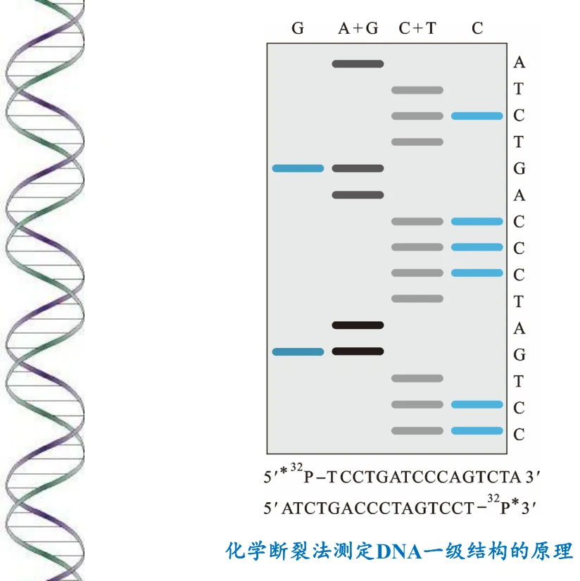
图源：第8章 PPT 第 18 页。化学断裂法测定 DNA 一级结构的原理。
为什么用四组而不是两组，以及高盐的作用
注意四个泳道是 G、A+G、C+T、C，而不是简单的 A/G/C/T 四组。原因是化学试剂很难做到对单一碱基的绝对专一：「A+G」与「C+T」是粗分，「G」与「C」是细分。通过比较泳道之间的差集才能确定每个位置的确切碱基——某位置若出现在「A+G」但不出现在「G」泳道，那就是 A。
高盐的作用是抑制肼对 T 的反应，从而把「C+T」变成只切 C。这是化学选择性的一个典型技巧：用反应条件而不是新试剂来实现专一性。
对比两种方法：Sanger 法靠酶（聚合酶 + ddNTP），Maxam-Gilbert 法靠化学试剂。后者需要放射性标记且操作繁琐、试剂有毒，因此在自动化竞争中落败，但它的原理（特定碱基修饰 → 骨架切割 → 电泳读出）在 DNA 足迹分析等领域仍在使用。
6.3 焦磷酸测序与高通量测序
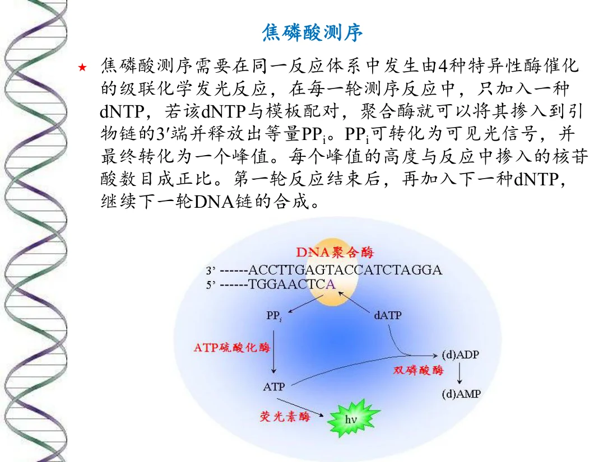
图源：第8章 PPT 第 19 页。焦磷酸测序原理。
焦磷酸测序的原理：需要在同一反应体系中发生由 4 种特异性酶催化的级联化学发光反应。在每一轮测序反应中，只加入一种 dNTP：
- 若该 dNTP 与模板配对，聚合酶就可以将其掺入到引物链的 3′ 端，并释放出等量的 PPi（焦磷酸）。
- PPi 可转化为可见光信号，并最终转化为一个峰值。
- 每个峰值的高度与反应中掺入的核苷酸数目成正比。
- 第一轮反应结束后，再加入下一种 dNTP，继续下一轮 DNA 链的合成。
焦磷酸测序为什么能测「连续相同碱基」
这是它相对于 Sanger 法的独特优势。因为峰值高度正比于掺入的核苷酸数目，如果模板上有连续的 TTTT，一次加入 dTTP 就会有四个核苷酸同时掺入，产生一个四倍高的峰。所以焦磷酸测序不仅能读序列，还能直接读出同聚物（homopolymer）的长度。
代价是：同聚物过长时（通常超过 5–6 个），峰高与数目的线性关系会变差，容易读错长度——这是 454 测序平台的主要错误来源。这也解释了为什么后来发展的 Illumina 等平台采用了完全不同的「可逆终止 + 荧光成像」策略。
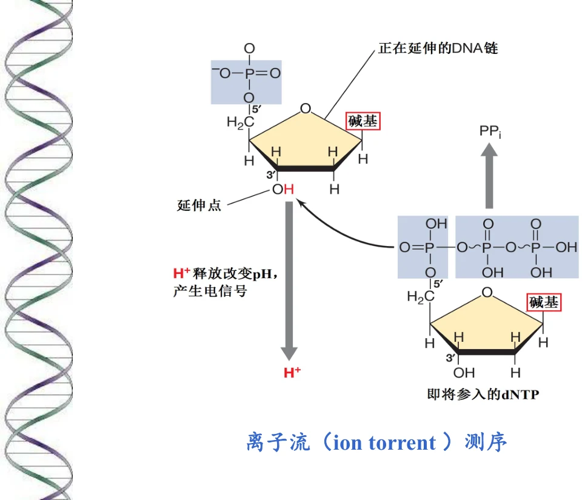
图源：第8章 PPT 第 20 页。离子流（Ion Torrent）测序——用半导体传感器直接检测掺入核苷酸时释放的氢离子引起的 pH 变化，把「化学信号 → 光信号」简化为「化学信号 → 电信号」，无需光学系统。
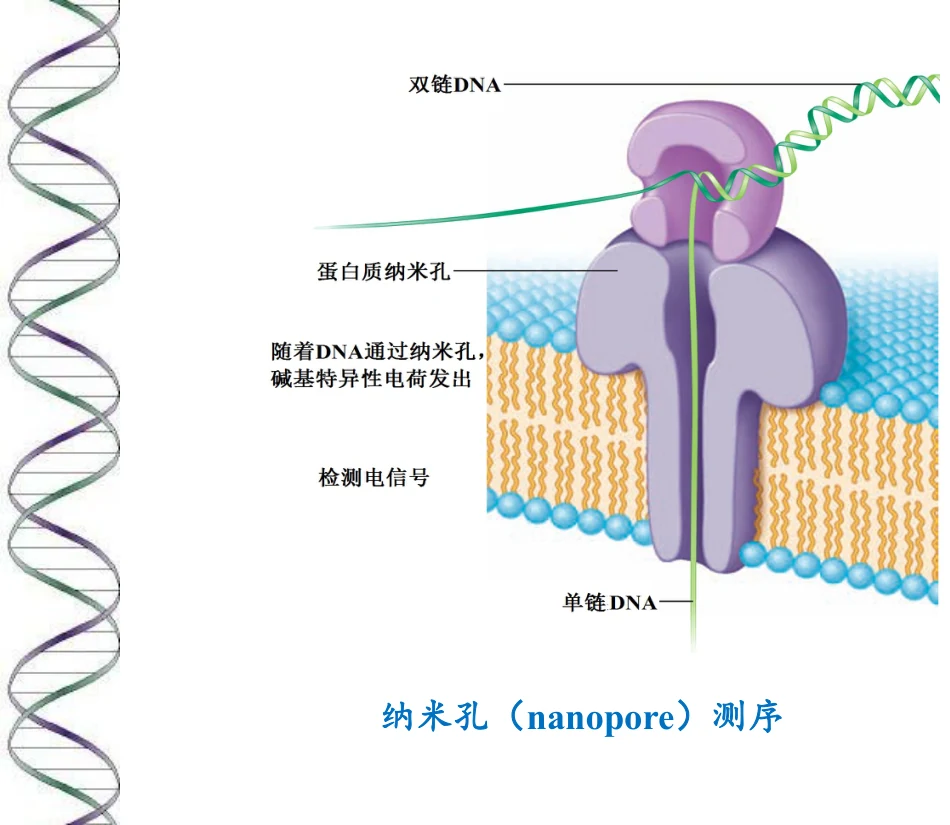
图源：第8章 PPT 第 21 页。纳米孔（Nanopore）测序——单链 DNA 穿过纳米孔时，不同碱基引起特征性的电流变化，通过电流信号直接读出序列。它的优势是能测长读长（long reads），可以跨越重复序列区域，弥补了短读长测序在基因组组装上的短板。
测序技术的三代演进，以及每一代解决了什么问题
第一代（Sanger、Maxam-Gilbert）：准确度极高，是「金标准」，但通量低、成本高，一次只能读一条序列。
第二代（焦磷酸测序、Ion Torrent、Illumina）：核心突破是大规模并行——把测序反应分散到数百万个微小反应单元中同时进行。课件提到的深度测序（deep sequencing）正是建立在此基础上：高通量测序技术可以对数百万个 DNA 分子同时进行测序，操作极为简便，大大节约了成本和时间，使得对一个物种基因组和转录组进行细致全面的分析成为可能。
第三代（纳米孔、单分子测序）：核心突破是长读长与单分子——不需要扩增，直接读单个分子，读长可达数十 kb，能够解决重复序列、结构变异等问题。
7. RNA 一级结构的测定
课件列出三种主要方法：
① 逆转录后测序 先使用逆转录酶将待测 RNA 逆转录成 cDNA，然后再使用末端终止法等进行测定。
② 部分消化 + 电泳 用化学或/和酶学方法对放射性同位素标记的 RNA 进行部分消化后，再进行聚丙烯酰胺电泳分析。
③ 质谱法 直接用质谱测定。
为什么 RNA 测序要「绕道」cDNA
因为 Sanger 法依赖 DNA 聚合酶，而 DNA 聚合酶不能以 RNA 为模板。逆转录酶恰好能做到这一点，于是把 RNA 问题转化成 DNA 问题——这是「把不熟悉的体系转化为熟悉的体系」这一方法学思想的典型例子。
这也解释了为什么 RNA 测序在历史上远晚于 DNA 测序，以及为什么转录组研究要依赖逆转录（今天的 RNA-seq 依然如此：逆转录 → 建库 → 高通量测序）。
8. 复习清单
- 核酸的五类理化性质各对应哪一类研究方法？
- 变性的定义是什么？定义中最关键的一句是哪句？为什么它决定了变性可逆？
- 变性时紫外吸收、浮力密度、黏度、生物活性各怎样变化？这四条能否用一个结构变化统一解释？
- 增色效应与减色效应分别发生在什么过程？
- Tm 的准确定义是什么？（提示：不要只说「熔点」）
- 影响 Tm 的四类因素各是什么？各自的机制？
- 为什么 GC 含量越高 Tm 越高？有几个层次的原因？
- 从第 8 章第 6 页的图中读出：离子强度如何影响 Tm？为什么？
- 复性与退火的定义分别是什么？为什么必须缓慢冷却？
- 复性时各表征如何变化？影响复性的四个因素是什么？
- Cot 曲线为什么能反映序列复杂度？真核基因组为什么呈多相曲线？
- 酸水解对糖苷键与磷酸酯键、嘌呤糖苷键与嘧啶糖苷键的选择性各是什么？会导致什么后果？
- RNA 与 DNA 对碱水解的敏感性有何不同？结构原因是什么？
- 这种碱敏感性差异的生理意义是什么？DNA 为什么应该更稳定？
- 核酸酶可以按哪些维度分类？外切酶与内切酶的区别是什么？
- 核酸分离纯化的六个步骤是什么？每一步依据什么性质？
- 为什么用 A₂₆₀/A₂₈₀ 判断核酸纯度？纯 DNA 与纯 RNA 的比值各约为多少？
- ddNTP 为什么能终止链延伸？「少量 ddNTP」为什么是关键？
- 写出 Sanger 法的完整操作步骤，并说明为什么最后要把读出的序列转化成互补链。
- Maxam-Gilbert 法为什么要用 G、A+G、C+T、C 四组而不是四组单一碱基？怎样从差集确定碱基？
- 「高盐下用肼处理只切 C」体现了什么方法学思想？
- Sanger 法与 Maxam-Gilbert 法的本质区别是什么（用什么实现专一性）？
- 焦磷酸测序的四种酶级联反应中，PPi 是怎样变成光信号的？
- 焦磷酸测序为什么能读出同聚物长度？它的局限是什么？
- Ion Torrent 与纳米孔分别检测什么信号？纳米孔的核心优势是什么？
- 深度测序的定义是什么？它使什么样的分析成为可能？
- RNA 一级结构测定的三种方法是什么？为什么第一条要「绕道 cDNA」？
9. 课件提示与待核对项
| 位置 | 课件原文情况 | 整理时的处理 |
|---|---|---|
| 第 4 页 | 表征写「生物活性不变、降低或丧失」 | 照录。这是课件自己的谨慎表述——变性程度不同，生物活性可以是部分保留的，不能一概说「丧失」 |
| 第 4 页 | 「DNA 的 Tm 值受到 DNA 的均一性、G-C 含量、离子强度和特殊的化学试剂的影响」，只说有四类因素，未解释机制 | 正文补写了每一类的机制。其中「均一性」影响的是曲线陡度而非 Tm 绝对值，请注意区分，此处按课件原文并列列出 |
| 第 6 页 | 图中有两条直线（低盐与高盐），但该页只有图题，未标注具体盐浓度 | 正文补注了图上的浓度：低盐 0.01 mol·L⁻¹ 磷酸 + 0.001 mol·L⁻¹ EDTA；高盐 0.15 mol·L⁻¹ NaCl + 0.015 mol·L⁻¹ 柠檬酸钠。这些数值来自图内标注 |
| 第 10 页 | 「酸碱解离」在第 1 页提纲中列为理化性质之一，但正文各页未单独展开 | 正文只在总览表中保留该项并注明对应技术（电泳、离子交换层析），未另行展开。如需补充请对教材 |
| 第 11 页 | 核酸酶分类表以图片形式给出，文字转储为「不同性质的核酸酶（Pu 表示嘌呤，Py 表示嘧啶）」 | 正文按通用分类维度（底物、作用位置、切割产物）重写为表格。维度划分与课件表可能不完全一致，请对原图核对 |
| 第 19 页 | 焦磷酸测序写「由 4 种特异性酶催化的级联化学发光反应」，未列出这四种酶的名称 | 正文照录「四种酶」的说法，未擅自补名（通用教材为 DNA 聚合酶、ATP 硫酸化酶、荧光素酶、腺苷三磷酸双磷酸酶，请对课件核对后再补） |
| 第 23–24 页 | 「RNA 一级结构的测定」两页内容完全相同（重复页） | 正文合并为一节，未重复 |
| 第 15 / 18 页 | 末端终止法与化学断裂法各有一页纯图（图题分别为「末端终止法图解」「化学断裂法测定 DNA 一级结构的原理」） | 正文按图题命名并保留原图，图注中说明其在流程中的位置 |
本次测验的概念校正：去除末端磷酸通常用磷酸酶；Sanger读出的是新链。焦磷酸测序中模板T对应掺入A，必须区分模板与新链。紫外纯度比值正常不能单独证明无污染或完整无降解。
章节测验
15道单选、3道多选、2道判断、2道填空。按5道基础、10道中等、4道较难、3道拓展递进；交卷后查看答案与解析。